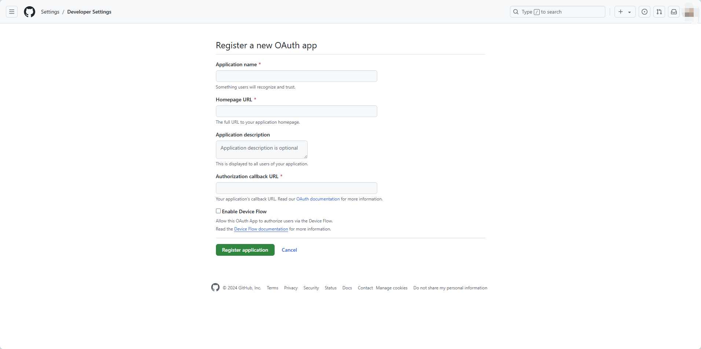
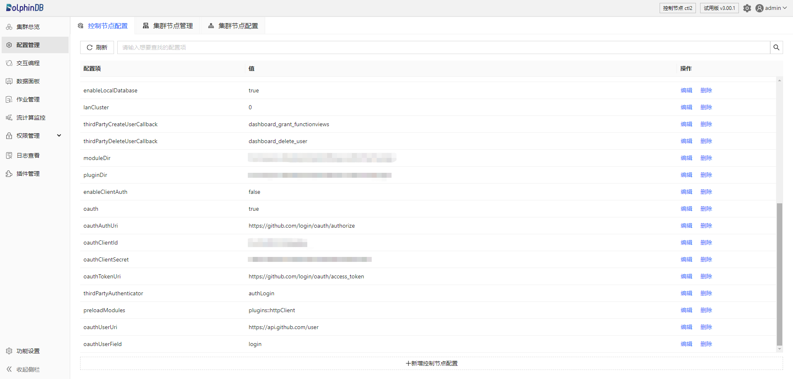

单点登录使用说明
OAuth 是单点登录（SSO）的一种实现方式。目前 DolphinDB 已支持其三种鉴权方式：Authentication Code（授权码模式，支持 Web）、Implicit（隐式授权模式，支持 Web）、Client Credentials（客户端凭证模式，支持 API）。在启用 OAuth 单点登录时，用户须保证已获得要登录的第三方网站和 DolphinDB server 的相关权限，成功登录后在 DolphinDB Web 中进行后续使用。
接下来以通过 GitHub 进行单点登录为例进行详细说明。
步骤一：第三方网站开启 OAuth 功能
GitHub 创建 OAuth 应用的说明可参考官方文档 创建 OAuth 应用 - GitHub 文档。
注意：若登录对象为国外网站，须保证系统中已配置相关代理节点。详细说明请另行参考，此处略过。图 1. 图1 第三方网站配置单点登录功能

成功创建后将显示图 2 界面，在该界面中获取 Client lD 和 Client secrets 信息，分别用来在 DolphinDB 中指定客户端的 ID
和密码。图 2. 图2 第三方网站成功开启单点登录

步骤二：DolphinDB 中配置相关参数
DolphinDB 中提供了 OAuth 功能的相关配置参数，详细说明可参阅 参数配置-单点登录。用户可使用两种配置方式：在 DolphinDB server 的配置文件中指定配置项；或在 Web 的配置管理界面新增配置参数。
注意：如果要在集群使用 OAuth 功能，则必须在所有节点的 controller.cfg, cluster.cfg 文件中都添加 OAuth 的相关配置参数。
如下为在 DolphinDB server 的配置文件中设置 OAuth
配置项的示例，请根据实际参数设置。
oauth = 1
oauthWebType = authorization code
oauthAuthUri = "https://github.com/login/oauth/authorize"
oauthClientId = xxxxxx
oauthClientSecret = xxxxxx
oauthTokenUri = "https://github.com/login/oauth/access_token"
oauthUserUri = "https://api.github.com/user"
oauthUserField = login成功配置后，可以在 DolphinDB Web 的配置管理界面看到相关参数。图 3. 图3 DolphinDB Web 的配置管理界面

步骤三：DolphinDB Web 中登录第三方账号
点击登录按钮，页面将跳转至第三方账户授权，确认后将跳转到原始登录页面。图 4. 图4 在 Web 页面登录第三方账户

若 Web 页面已登录的用户名显示为授权的第三方用户，则 OAuth 方式登录成功。